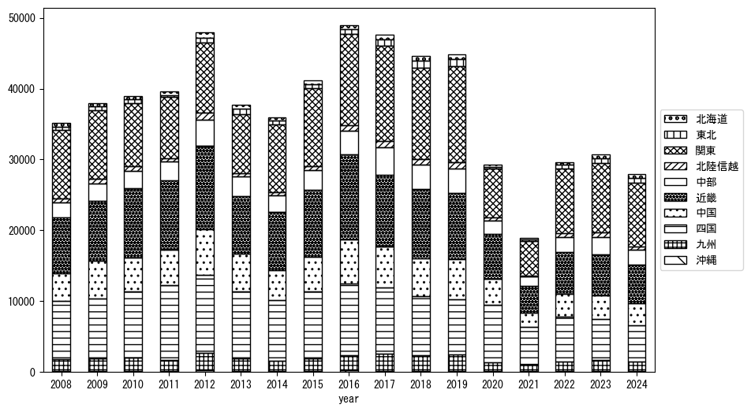
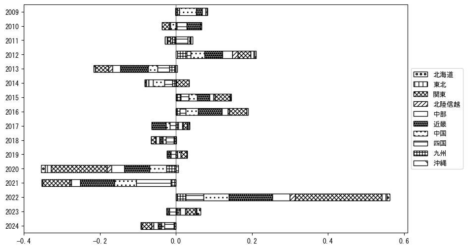
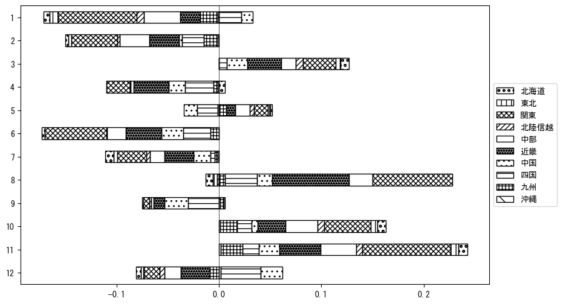

-
トップ
-
愛媛県
愛媛県
１．延べ宿泊者（総数）の推移
時系列グラフ
 図１：愛媛県内の従業員数100人以上の宿泊施設での延べ宿泊者数（国外、居住地不詳を含む総数）。
図１：愛媛県内の従業員数100人以上の宿泊施設での延べ宿泊者数（国外、居住地不詳を含む総数）。
基本統計量
表１：従業員数100人以上の宿泊施設での延べ宿泊者の総数（国外、および居住地不詳を含む）に関する基本統計量。単位は人泊。平均は１か月あたりの平均値を表す。図１に対応。
| 2008年 |
50,389 |
6,929 |
41,154 (12月) |
59,737 (11月) |
| 2009年 |
47,243 |
11,328 |
30,501 (2月) |
65,196 (8月) |
| 2010年 |
48,582 |
9,408 |
35,205 (12月) |
67,120 (3月) |
| 2011年 |
44,656 |
6,074 |
37,576 (6月) |
60,021 (8月) |
| 2012年 |
53,782 |
8,078 |
45,971 (6月) |
65,984 (3月) |
| 2013年 |
46,408 |
6,784 |
38,154 (6月) |
61,033 (8月) |
| 2014年 |
41,046 |
7,278 |
32,616 (9月) |
55,446 (11月) |
| 2015年 |
44,301 |
6,778 |
35,827 (2月) |
57,141 (8月) |
| 2016年 |
54,222 |
8,064 |
39,551 (1月) |
67,957 (8月) |
| 2017年 |
53,167 |
8,363 |
35,443 (1月) |
66,192 (11月) |
| 2018年 |
49,550 |
10,354 |
33,237 (7月) |
65,180 (3月) |
| 2019年 |
49,176 |
7,383 |
38,908 (4月) |
60,412 (11月) |
| 2020年 |
29,842 |
17,112 |
2,724 (5月) |
55,273 (11月) |
| 2021年 |
23,260 |
10,727 |
11,719 (5月) |
43,078 (11月) |
| 2022年 |
31,821 |
8,916 |
14,599 (2月) |
44,393 (8月) |
| 2023年 |
36,199 |
6,583 |
23,550 (7月) |
44,831 (8月) |
| 2024年 |
35,414 |
5,179 |
29,871 (6月) |
44,369 (11月) |
２．宿泊者数の重心（年平均の推移）
図２：愛媛県内の従業員数100人以上の宿泊施設での延べ宿泊者数（国外、居住地不詳を除く）の重心（年平均の推移）。
全画面表示
重心の前年平均からの移動距離と方位、および緯度・経度
表２：重心の前年平均からの移動距離と方位、および緯度・経度。図２に対応。
| 2008年 |
— |
— |
34.8894 |
135.7591 |
| 2009年 |
西南西 |
10.1km |
34.8694 |
135.6512 |
| 2010年 |
西南西 |
13.4km |
34.8389 |
135.5092 |
| 2011年 |
西南西 |
6.3km |
34.8132 |
135.4480 |
| 2012年 |
北 |
2.9km |
34.8396 |
135.4488 |
| 2013年 |
北東 |
5.0km |
34.8682 |
135.4915 |
| 2014年 |
東 |
25.3km |
34.9091 |
135.7641 |
| 2015年 |
南南西 |
0.6km |
34.9043 |
135.7607 |
| 2016年 |
東 |
1.5km |
34.9034 |
135.7772 |
| 2017年 |
東北東 |
14.0km |
34.9685 |
135.9085 |
| 2018年 |
東北東 |
10.9km |
35.0103 |
136.0166 |
| 2019年 |
北東 |
7.4km |
35.0482 |
136.0835 |
| 2020年 |
西南西 |
75.2km |
34.7315 |
135.3556 |
| 2021年 |
東北東 |
19.4km |
34.7924 |
135.5537 |
| 2022年 |
東北東 |
46.2km |
34.9637 |
136.0149 |
| 2023年 |
北東 |
19.6km |
35.0756 |
136.1804 |
| 2024年 |
東 |
3.1km |
35.0771 |
136.2140 |
運輸局別延べ宿泊者数
時系列（年平均）

図３：愛媛県内の従業員数100人以上の宿泊施設での１か月あたり平均延べ宿泊者数（国外、居住地不詳を除く）の運輸局別内訳。
寄与度（前年からの変化率に対する）

図４：愛媛県内の従業員数100人以上の宿泊施設での運輸局別延べ宿泊者数（国外、居住地不詳を除く）から求めた寄与度。
３．宿泊者数の重心（月別）
図５：愛媛県内の従業員数100人以上の宿泊施設での延べ宿泊者数（国外、居住地不詳を除く）の重心（月別）。観測期間は2008年1月から2024年12月まで。
全画面表示
全期間（2008年1月～2024年12月）の平均と月別平均の比較
表３：全期間の平均から月別平均までの移動距離と方位、および緯度・経度。図５に対応。
| 全期間 |
— |
— |
34.9119 |
135.7610 |
| 1月 |
西南西 |
45.9km |
34.7456 |
135.3014 |
| 2月 |
西南西 |
9.8km |
34.8875 |
135.6583 |
| 3月 |
北東 |
15.4km |
35.0004 |
135.8903 |
| 4月 |
北東 |
15.1km |
35.0015 |
135.8862 |
| 5月 |
東北東 |
11.0km |
34.9557 |
135.8689 |
| 6月 |
西南西 |
10.1km |
34.8877 |
135.6550 |
| 7月 |
南西 |
12.5km |
34.8287 |
135.6693 |
| 8月 |
東南東 |
10.5km |
34.8623 |
135.8592 |
| 9月 |
東北東 |
12.7km |
34.9455 |
135.8936 |
| 10月 |
北東 |
17.7km |
35.0064 |
135.9174 |
| 11月 |
東北東 |
23.9km |
35.0160 |
135.9897 |
| 12月 |
西南西 |
23.2km |
34.8059 |
135.5428 |
運輸局別延べ宿泊者数
月別平均（2008年1月～2024年12月）
 図６：愛媛県内の従業員数100人以上の宿泊施設での延べ宿泊者数（国外、居住地不詳を除く）の運輸局別内訳（月別）。
図６：愛媛県内の従業員数100人以上の宿泊施設での延べ宿泊者数（国外、居住地不詳を除く）の運輸局別内訳（月別）。
寄与度（全期間の平均から月別平均への変化率に対する）

図７：愛媛県内の従業員数100人以上の宿泊施設での運輸局別延べ宿泊者数（国外、居住地不詳を除く）から求めた寄与度（月別）。
４．データのダウンロード
出典：観光庁「宿泊旅行統計調査」に収録された「施設所在地、居住地別延べ宿泊者数（従業員数100人以上の施設）」
国土地理院「白地図（地理院タイル）」（図２と図５）